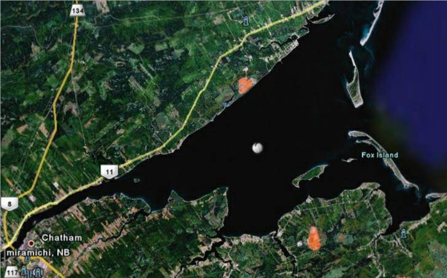

The Family Chronicle
No. 159 July 1, 22008
____________________________________________________________________

Islands of the Miramichi
I lived for many years on the Miramichi and, while I knew that there were Islands at the mouth, I always thought that incoming ships and even fishing boats could travel most anywhere; that is not the case. I am beholden to Lynn Gregan for the nautical geography lesson and now realize how narrow and winding the entrance channel really is.
The inner Miramichi Bay is separated from the outer Bay by a line of uninhabited barrier islands. The inner bay measures only 4 m deep on average, with the navigation channel measuring only 6-10 m. The Miramichi Bay is no longer dredged; therefore, the ports of Chatham and Newcastle (Miramichi) are only accessible to ships with a shallow draft.
Fox Island, 5-6 miles in length, was probably named after the British statesman Charles James Fox (1749-1806). is the longest with the closest point being to the East of Baie Ste Anne and about a mile off shore. It has long been the site of commercial fishing operations.
Portage Island to the north of Fox Island is about 4-5 miles long and runs almost directly north and south. In the 1950’s, Portage Island which was cut in two by a large storm.
Egg Island, a much smaller Island, lies just west of Fox Island in the inner Miramichi Bay
Huckleberry Island between Fox Island and the mainland seems to have disappeared and is now only shallow water.
Hay Island, just north of Portage Island, is another small Island that adds to the barrier
Neguac Beach is a long grassy sandbar that shows up at low tide. It runs parallel to the north coast of the Miramichi Bay and surfaces at low tide, therefore adding to the barrier.
Bay du vin Island, although not one of the barrier islands, is located off Bay du Vin Beach about three miles west of Fox Island.
Navigation through the Islands is limited and tricky to say the least. Large, commercial vessels enter through a narrow, twisting channel, perhaps a hundred yards wide, between Fox and Portage Islands; other vessels, including fishing boats, have greater, but certainly not unlimited, freedom to navigate.
Donald Edge has pointed out that Fox Island was considered part of Glenelg Parish at the time of the 1851 census with at least one house/family at the time.
I mentioned in an earlier Chronicle that my father owned a marsh on Fox Island; the land was used for the hay and was not cultivated. I recall Walter and John, and perhaps others, going to Fox Island once to make hay. They brought two sled loads of hay back to Black River behind the old Model A car.
When they reached the Little Branch Bridge, they unhooked the sleds from the car leaving them on the flats across the river from the wharf. Then they harnessed a horse, they were single sleds as I recall, hitched one to each sled, went up onto the road, crossed the bridge and landed the hay at the barn. I remember looking across from the wharf to a sled on the ice near the far shore
I believe that Fox Island had “floating marshes” meaning that although the land was privately held, the right to cut hay on a particular marsh rotated on a yearly basis.
The Family Chronicle (Copyright) is an occasional newsletter published by Don Glendenning and posted on the family website. It is intended to share information about my family, community and the times in which I grew up. While every effort is made to be accurate, errors are likely to occur. Comments, enquiries and information may be sent to 62 Queen Elizabeth Drive, Charlottetown, PEI, C1A 3A9. Tel: 902 892 5859. Email: don@glendenning.net Web: www.glendenning.net/don